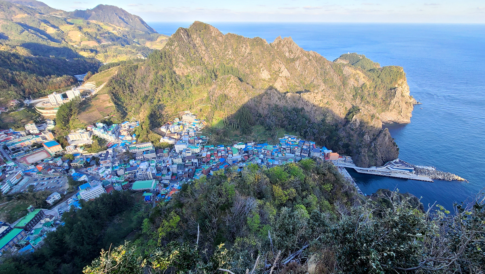

네비게이션영역

sub 제목영역
울릉도
울릉도

수백만 년 전 자연의 모습을 고스란히 간직한 울릉군.
겨울철 설경이 뛰어난 나리분지와 울릉도의 숨은 비경인 관음도는 약 14m 높이의 관음쌍굴을 보기 위해 많은 이들이 발걸음 한다.
생김새에 따른 이색 암석 형상들도 눈에 띄는데, 새끼를 등에 업은 거북바위부터 바닷물을 들이키는 코끼리바위, 영지버섯 모양의 버섯바위까지 다양해 바위 기행은 이곳에서만 즐길 수 있는 특별한 여행 테마이다.
자원의 보물 창고인 독도도 꼭 한번 다녀와야 할 여행지!
면적 72.9km2, 해안선 길이 64.43km, 최고봉 986m, 인구가 1만여 명인 울릉도는 1읍(울릉읍), 2면(북면), 서면으로 구성되어 있으며 군청은 울릉읍 도동리에 있다.
울릉도는 우리나라 동해를 굳건히 지키며 외롭게 떠 있는 섬으로 여행을 하기에는 좀 부담스러운 것이 사실이다.
험한 파도를 뚫고 배를 타고 가는 것은 물론, 그 배를 타기 위하여 멀리 경북 포항과 후포, 강원도의 묵호, 강릉까지 가야 한다.
그리고 출발하는 여객선도 하루에 딱 한 번뿐이다.
동해는 서남해와 달리 바람이 최고 12m만 불면 풍랑이 일어 다니지 못한다.
서해와 남해는 초속 14m가 기준인데 울릉도는 더 엄격하다.
기상에 따라서 1년에 100일 정도 결항이 반복되지만 일기예보를 보면 어느 정도 예측은 할수 있다.
울릉도와 독도 여행은 그야말로 큰마음을 먹고 가야 한다. 울릉도에 처음 인연을 맺은 것은 1993년도이다. 그때 저동에서 오토바이를 빌려 타고 일주도로가 생기기 전에 혼자서 험산준령을 넘어다니며 두루두루 여행을 한 적이 있다. 그 뒤 2012년 8월, 삼척시에서 해양학자대회 겸 이사부 축제에 참석한 후 울릉도와 독도를 단체방문하였다. 두 달 후에는 경북도청 초청으로 다시 울릉도와 독도를 방문하여 독도에서 1박을 하면서 특강한 적이 있다.
멀기도 하고 시간 관계상 다시는 울릉도와 독도에 갈 일이 없을 줄 알았는데 10월 15일 코리아나호 선장(정채호, 전 여천시장)의 초청으로 일행 3명과 같이 삼척으로 달려가 범선을 타고 울릉도와 독도 여행을 하게 되었다. 이 범선은 삼척시의 이사부 장군 축제 때마다 초청받아 돛을 달고 행사를 가진다. 1991년부터 지금까지 등대호를 타고 전국을 3번씩이나 순회 답사를 하였지만, 돛단배인 범선으로 하는 울릉도와 독도 여행은 또 다른 설렘으로 다가 왔다.